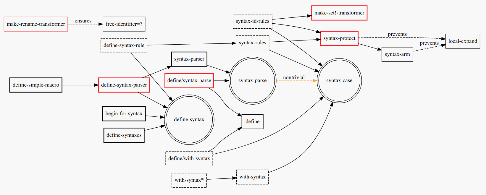

Practical macros in Racket
and how to work with them
Table of Contents
- 1. Read the original article here.
- 2. Practical macros in Racket and how to work with them
- 3. What's all this racket?
- 4. DISCARD
syntax-case(the typeless version ofsyntax-parse). Don't use it! - 5. TODO Learn to use the
syntax-parsefamily - 6.
make-rename-transformer - 7.
make-set!-transformer - 8. Syntax taints, what are they?
- 9. Literals
- 10. Experimenting with the lowest level
- 11. Syntax parameters, what are they for?
- 12. I don't get it, how does
syntax-parsework? - 13. Read the original article here.
- 14. Take-away notes
1 Read the original article here.
| Written by: | Kevin R. Stravers |
2 Practical macros in Racket and how to work with them
A macro is central in any Lisp and must be mastered in order to master
the language. However, Racket is in a state of macro chaos - at least in
the official documentation. There's define-syntax-rule, syntax-parse,
syntax-case, and so many more. How do we make sense of it? In this
tutorial we'll investigate syntax transformers in Racket so we can get a
complete picture.
3 What's all this racket?
I've looked through the racket documentation and connected most of the syntax transformers there. Here are the biggest ones and some utility functions.

| symbol | meaning | example |
|---|---|---|
| Arrows | Denote that one (-> can be defined in terms of) the other |
define-simple-macro (-> can be defined in terms of) define-syntax-parser. |
| Red boxes | Indicate what I believe to be important tools | define-syntax-parser, define/syntax-parse, syntax-protect, make-set!-transformer |
| circles | Denote important syntax primitives. | define-syntax, syntax-parse, syntax-case |
| Bold boxes | Important but not essential. | define-syntaxes, begin-for-syntax, define-simple-macro, syntax-parser |
| Normal boxes | Not that important, but good to know. | define, syntax-arm, local-expand, free-identifier=? |
| Dashed boxes | Unimportant tools that ought to be deprecated. | define-syntax-rule, syntax-rules, with-syntax, with-syntax*, define-with-syntax, syntax-id-rules |
For the new macro programmer this is quite a lot to take in, and there's
a myriad of other tools that supplement these, but I can safely say that
you can ignore everything except define-syntax-parser if you're new.
Why? Because it's a typechecking syntax transformer and allows you to
manipulate syntax in a complex manner. It also prevents you from having
to use define-syntax together with syntax-parse. In essence it's a way
to define macros in a clean manner.
4 DISCARD syntax-case (the typeless version of syntax-parse). Don't use it!
syntax-case- Sucks because you must write additional code to check the type during macro-time.
syntax-parse- Rules because you can assert that a term is an identifier or a keyword in a declarative manner.
- There are also some other differences in how arguments are applied and errors are reported.
syntax-parseis widely superior tosyntax-case.
4.1 If you do use syntax-case then you can (and should) use with-syntax too
4.1.1 with-syntax very similar to (but should be used alongside) syntax-case
with-syntax is part of the same family of Pattern-Based Syntax Matching forms as syntax-case and is nearly identical to syntax-case under the hood:
Similar to syntax-case |
it matches a pattern to a syntax object |
Unlike syntax-case |
all patterns are matched, each to the result of a corresponding stx-expr |
The result of the with-syntax form is the result of the last body, which is in tail position with respect to the with-syntax form. This is what syntax-case does too.
But don't use with-syntax anywhere else!
with-syntaxis incredibly useful insyntax-case, but- inside
syntax-parsewe should use#:withinstead.
4.1.2 Examples: #:with vs with-syntax for use with define-syntax-parser
The advantage of #:with over with-syntax is the use of types and better
error reporting for syntax-parse.
#:with
(require syntax/parse/define) (define-syntax-parser with-example [(_ a) #:with (b:id ...) #'(one two three) #'(list a 'b ...)]) (with-example 'zero) ; '(zero one two three)
with-syntax
(require syntax/parse/define) (define-syntax-parser with-example [(_ a) (with-syntax ([(b ...) #'(one two three)]) #'(list a 'b ...))]) (with-example 'zero) ; '(zero one two three)
#:withvswith-syntax
with-syntaxuses more parentheses.#:withspecifies type:idforb
(define-syntax-parser with-example [(_ a) - #:with (b:id ...) #'(one two three) - #'(list a 'b ...)]) + (with-syntax ([(b ...) #'(one two three)]) + #'(list a 'b ...))])
5 TODO Learn to use the syntax-parse family
syntax-parse is the primitive of the most advanced syntax transformer in
racket (as far as I know). Here are some examples of how to use syntax-parse.
;; Remember to require this (require syntax/parse syntax/parse/define) ;; Or do you do this? -- either/or I guess (require syntax/parse/define (for-syntax racket))
5.1 Example A: (most concise). Uses define-syntax-parser
Most of the time we want to use define-syntax-parser because it saves us the effort of typing syntax-parse and stx, as in the examples that follow.
(define-syntax-parser name [(_ a b ...+) #'(+ a (- b ...))]) (name 1 2 3 4) ; -4
5.2 Perfectly fine example B: (expanded). Uses define-syntax
This is an expanded version of the above.
(define-syntax (name stx) (syntax-parse stx [(_ a b ...+) #'(+ a (- b ...))])) (name 1 2 3 4) ; -4
5.3 Perfectly fine example C: (shorthand). Uses define-syntax
stxis inferred here
(define-syntax name (syntax-parser [(_ a b ...+) #'(+ a (- b ...))])) (name 1 2 3 4) ; -4
5.4 define-syntax-parser vs shorthand define-syntax
-(define-syntax-parser name - [(_ a b ...+) - #'(+ a (- b ...))]) +(define-syntax name + (syntax-parser + [(_ a b ...+) + #'(+ a (- b ...))]))
6 make-rename-transformer
This special transformer is basically an alias that preserves identifier equality.
(define-syntax l (make-rename-transformer #'let)) (let ([a 1] [b 2]) (+ a b)) ;; 3 (l ([a 1] [b 2]) (+ a b)) ;; 3 (free-identifier=? #'let #'l) ;; #t
7 make-set!-transformer
Another special transformer is the set!-transformer, it allows you to
transform a mutation of an identifier.
(define a 0) (define b 1) (let-syntax ([a (make-set!-transformer (syntax-parser #:literals (set!) [(set! _ v) #'(set! b v)] [i:id #'a]))]) (set! a 2) (list a b)) ;; '(0 2)
I haven't had much use for this in my code so far, but I guess it's fine to keep in mind in case you need it.
8 Syntax taints, what are they?
The documentation on syntax taints is confusing to me. Here's my synopsis: It prevents the arbitrary use of identifiers: if you extract any part of another macro's armed result, then that extracted part is tainted and can't be used further. Allow me to exemplify:
Examples:
(require syntax/parse/define) (define-syntax-parser a [(_) (syntax-protect #'(c))]) ; (c) is armed here (define-syntax-parser b [(_) ; c is extracted from (c), which taints the result c #:with d (car (syntax-e (local-expand #'(a) 'expression #f))) ; the macro expander inserts d which results in #'(+ TAINTED:c), ; so the expander rejects this #'(+ d)]) (b) ;; eval:22:0: #%top: cannot use identifier tainted by macro ;; transformation ;; in: #%top
This rejects the expression (+ c) because the identifier c is tainted.
Why is it tainted? Because syntax-e tainted it. Why did it taint it?
Because the syntax-object was armed.
(require syntax/parse/define) (define c 10) (define-syntax-parser a [(_) (syntax-protect #'c)]) (define-syntax-parser b [(_) #:with d #'(a) #'(displayln d)]) (b) ;; 10
This shows that the expander
- accepts
- armed, and
- clean syntax objects, but
- rejects
- tainted syntax objects.
9 Literals
syntax-parse allows the use of literals:
(require syntax/parse/define) (define-syntax-parser my-parser #:datum-literals (a-word) [(_ a-word b-word) #'(begin (displayln 'a-word) (displayln 'b-word))]) (my-parser a-word 10) a-word ;; 10
#:literals is also possible. Then there's a need for an identifier to
exist in the enclosing phase:
(define-syntax-parser my-parser #:literals (is-this-bound?) [(_ is-this-bound? b-word) #'(begin (displayln 'a-word) (displayln 'b-word))]) (my-parser is-this-bound? 10) ;; eval:33:0: syntax-parser: literal is unbound in phase 0 ;; (phase 0 relative to the enclosing module) ;; at: is-this-bound? ;; in: (syntax-parser #:literals (is-this-bound?) ((_ ;; is-this-bound? b-word) (syntax (begin (displayln (quote ;; a-word)) (displayln (quote b-word))))))
We can use literals to discriminate between real and fake identifiers:
(define-syntax-parser is-it-let? [(_ (~literal let)) #'#t] [(_ (~datum let)) #'#f] [_ #'#f]) (is-it-let? let) ;; #t (let ([let 0]) (is-it-let? let)) ;; #f
Note that (~literal x) as a pattern is the same as specifying #:literals
(x) as keyword argument and using x as a pattern. Similarly for
#:datum-literals (x).
10 Experimenting with the lowest level
Using define-syntax we can define simple functions that are essentially
macros that don't pattern match. This style allows you to get to know
the low-level API, and I believe it to be very important to experiment
with to understand what syntax-parse is actually doing.
Vision is the most important thing, let's look at what's going on!
; Note: a macro only takes on argument, which contains the entire syntax object (define-syntax (name stx) (displayln stx)) (name hello world) ;; #<syntax:39:0 (name hello world)> ;; name: received value from syntax expander was not syntax ;; received: #<void>
We need to add a result that is a syntax object:
(define-syntax (name stx) (displayln stx) #'(void)) (name hello world) ;; #<syntax:41:0 (name hello world)>
Now to extract some values. There are primitives used to extract information from syntax objects.
(define-syntax (name stx) (displayln `("stx" ,stx)) (displayln `("syntax-e" ,(syntax-e stx))) (displayln `("syntax->list" ,(syntax->list stx))) (displayln `("syntax-source" ,(syntax-source stx))) (displayln `("syntax-line" ,(syntax-line stx))) (displayln `("syntax-column" ,(syntax-column stx))) (displayln `("syntax-position" ,(syntax-position stx))) (displayln `("syntax?" ,(syntax? stx))) (displayln `("syntax-span" ,(syntax-span stx))) (displayln `("syntax-original?" ,(syntax-original? stx))) (displayln `("syntax-source-module" ,(syntax-source-module stx))) (displayln `("syntax->datum" ,(syntax->datum stx))) #'(void)) (name hello world) ;; (stx #<syntax:43:0 (name hello world)>) ;; (syntax-e (#<syntax:43:0 name> #<syntax:43:0 hello> #<syntax:43:0 world>)) ;; (syntax->list (#<syntax:43:0 name> #<syntax:43:0 hello> #<syntax:43:0 world>)) ;; (syntax-source eval) ;; (syntax-line 43) ;; (syntax-column 0) ;; (syntax-position 43) ;; (syntax? #t) ;; (syntax-span 1) ;; (syntax-original? #f) ;; (syntax-source-module #f) ;; (syntax->datum (name hello world))
These are some of the functions that we can use on syntax objects.
There's another one that allows us to turn datums into syntax called
datum->syntax. Let's see if we can construct a simple macro based on
this and syntax-e:
We're gonna make (infix 1 + 2) return (+ 1 2).
(define-syntax (infix stx) (let ([elems (syntax-e stx)]) (when (not (= (length elems) 4)) (raise-syntax-error "there should be 3 elements")) (datum->syntax stx `(,(caddr elems) ,(cadr elems) ,(cadddr elems))))) (infix 1 + 2) ; 3
Notice how there are 4 elements in the list, because infix is inside it
too. We also need to provide a context for datum->syntax. The
identifiers used in the result will be referenced from that context. In
this case we used stx as the context. If you use #f, then + won't be
found and we have an error. The macro is essentially equivalent to:
(define-syntax-parser infix [(_ a op b) #'(op a b)]) (infix 1 + 2) ;; 3
With syntax-parse the context is dependent on the input. This way we can
safely refer to variables from the caller's scope. This safety is what
we call "macro hygiene", and allows us to compose macros without
breaking them.
11 Syntax parameters, what are they for?
- anaphoric macro
- A macro that can define macro-local variables.
This isn't composable because replacing code with anaphoric macros may break it, I present you exhibit A, the unhygienic macro:
(define-syntax (aif stx) (let ([elems (syntax-e stx)]) (datum->syntax stx `(let ([it ,(cadr elems)]) (if it ,(caddr elems) ,(cadddr elems)))))) (define it 10) (aif (member 2 '(1 2 3)) (displayln it) (void)) ;; (2 3)
The programmer wanted to print 10 but instead something else got printed. This is a trivial example but quickly balloons with bigger programs and bigger macros.
Let's instead use syntax-parameters. These can be used hygienically:
(require racket/stxparam) (define-syntax-parameter it (syntax-parser)) (define-syntax-parser aif [(_ condition then otherwise) #'(let ([t condition]) (syntax-parameterize ([it (syntax-parser [_ #'t])]) (if t then otherwise)))]) (aif (member 2 '(1 2 3)) (displayln it) (void)) ;; (2 3)
If we now have a declaration of it, that will override the syntax parameter.
(let ([it 10]) (aif (member 2 '(1 2 3)) (displayln it) (void))) ;; 10
During normal racket evaluation (i.e. from a file) you'll get a
duplicate-identifier error, in this context there's another error, but
the point is that there is an error instead of letting the programmer
scratch his head.
(define it 10) (aif (member 2 '(1 2 3)) (displayln it) (void)) ;; eval:53:0: syntax-parameterize: not bound as a syntax ;; parameter ;; at: it ;; in: (syntax-parameterize ((it (syntax-parser (_ (syntax ;; t))))) (if t (displayln it) (void)))
12 I don't get it, how does syntax-parse work?
syntax-parse works by replacing all syntax objects after the pattern
match with the results from the pattern match:
(syntax-parse #'(this is some syntax) [(here is the pattern) #'(pattern is put here)]) ;; #<syntax:58:0 (syntax is put this)>
put is not in the pattern, so it's just pasted as-is.
12.1 Another cool thing: you can run arbitrary code in the body:
(syntax-parse #'(this is some syntax) [(here is the pattern) (displayln "This is arbitrary code, we could download webpages for use in this macro, whatever you wish") #'(pattern is put here)]) ;; This is arbitrary code, we could download webpages for use in this macro, whatever you wish ;; #<syntax:59:0 (syntax is put this)>
12.2 There are also some special pattern forms:
(syntax-parse #'(this is some syntax) [(here ...) #'(here ... put stuff)]) ;; #<syntax:60:0 (this is some syntax put stuff)>
12.2.1 Table of forms
| syntax | description |
|---|---|
... |
a postfix operator that makes syntax-parse consider whatever is before as a list of that pattern. It will expand this list in the expander when it is encountered. This allows us to create pretty complex macros |
...+ |
means one or more. |
(syntax-parse #'((this is) (some syntax)) [((here there) ...+) #'(here ... there ... put stuff)]) ;; #<syntax:61:0 (this some is syntax put stuff)>
12.2.2 They can even be nested
(syntax-parse #'((this is) (some more stuff syntax)) [((here ... there) ...+) #'(here ... ... there ... put stuff)]) ;; #<syntax:62:0 (this some more stuff is synt...>
Note that the ... operator in the syntax has left-associativity, so:
here ... ...reduces to (in this case)((this) (some more stuff)) ... ...- which reduces to
(this) ... (some more stuff) ... - which reduces to
this some more stuff
13 Read the original article here.
14 Take-away notes
14.1 parts of syntax
| syntax | description | family | use |
|---|---|---|---|
#with |
syntax-parse |
✓ | |
with-syntax |
syntax-case |
✗ |
14.2 syntax transformer families
| family | description | use |
|---|---|---|
syntax-parse |
the most advanced | ✓ |
syntax-case |
the typeless version of syntax-parse | ✗ |